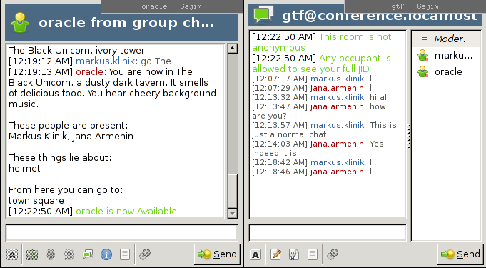
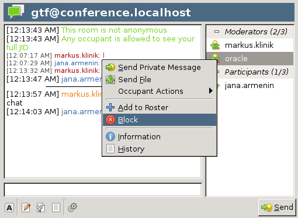
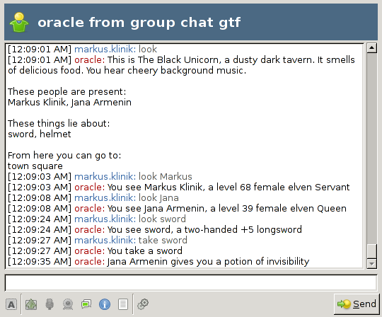

The Tower is a text adventure that is supposed to jazz up jabber group chats. It doesn't have many features though. You can walk around, stare at the landscape and at other people, pick up items and give items to other players. There are no quests and there is no combat. The Tower doesn't want to distract you too much from your regular slavery, it just wants to generate some amusing chat messages occasionally.
You play the game by chatting with a special participant in the group chat, called the oracle. The oracle tells you what happens around you, what you see, and what other players do. You tell the oracle what you want to do by sending chat messages that start with certain words, called commands. For example, if you are someplace and there is an apple lying about, you say "take apple", and the oracle tells you that, whoa, you are now in possession of a healthy, sweet, juicy apple. How cool is that!
Just join a jabber group chat where somebody has already started an oracle. Or ask your local nerds to start one for you, if you don't know how to do it yourself. Anyway, join the chat room and you will see the oracle as participant in the group chat. If it is the first time that you enter the group chat, the oracle will create a new character for you, and greet you with a private message. Open that message and start playing!
If you already have a character, i.e. you have been in that chat room before, then you have to open a private conversation window with the oracle yourself. Do so by double-clicking the name of the oracle in the list of participants of the group chat.
Look at the sceenshot below. To the right, you see the group chat window that has the list of participants. On the left, you see the privat chat window with the oracle. The left window opened when I double-clicked the oracle's entry in the right window. Depending on which jabber client you use, the windows might look a bit different.
Please note that you can't put the oracle in your contact list. All conversation with the oracle must happen via personal group-chat messages.
If you don't want to participate in the game, don't join the groupchat where the oracle is.
If you join a group chat because you want to chat with the people there, not with a stupid computer game, and the oracle annoys you to no end, you can make it shut up by blocking all messages from the oracle. Depending on the jabber client you are using, there should be some way to ignore the oracle. Try right-clicking the oracle's entry in the list of participants. Most jabber clients offer a context menu entry to ignore a particular person.
But keep in mind that this makes the oracle very sad. You don't want to make the oracle sad, do you?! DO YOU???
Hint: you can unblock the oracle at any time again.
Here is a conversation with the oracle, you see the messages that a player sends to the oracle, and the responses.

Note: commands and names of things can be abbreviated. If you are in a location where another location named "Forest" is adjacent, the commands
goto Forestand
go Fordo the same thing.
help commandsList all available commands.
lookatDescribes your immediate surroundings.
lookat <name>Describes items or players.
goto <location-name>Go to a different location.
inventoryList your possessions.
take <item-name>Pick up an item.
put <item-name>Put down an item.
forge <name> $ <description>
Create a new item. Note that the dollar sign must be surrounded by spaces. To use this command, you need to have a scroll of forgery in your inventory. How to get one, you ask? Play the game, chat with the other players and if you are nice to them, somebody might eventually give one to you.
If you finally get your scroll of forgery, keep in mind that items and their descriptions are what make the game amusing. Be creative, don't be rude. And always remember: With great power comes great responsibility.
Can you forge a new scroll of forgery? Of course you can! Just forge an item whose name is scroll of forgery, and there you go!
delete <item-name>Delete an item. Use this command to get rid of all the crappy stuff you forged when you were still a sorcerer's apprentice. However, think twice before discarding the last scroll of forgery in the game.
give <item-name> to <player-name>Give an item to another player.
say <text>Say something and everybody in your current location will hear it.
tell <player-name> $ <text>Say something that only one other player can hear.
me <text>Do something and everybody in your current room will see it. For example, if I would utter the words me jumps for joy, everybody in my current location would get a message Markus Klinik jumps for joy
For bug reports and feature requests, please use the issue tracker.
Markus Klinik (markus.klinik at gmx.de)
You can download this project in either zip or tar formats.
You can also clone the project with Git by running:
$ git clone git://github.com/mklinik/hmud